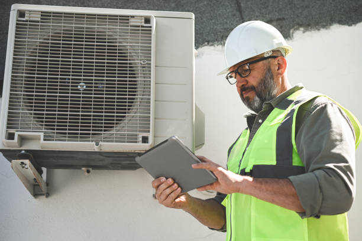
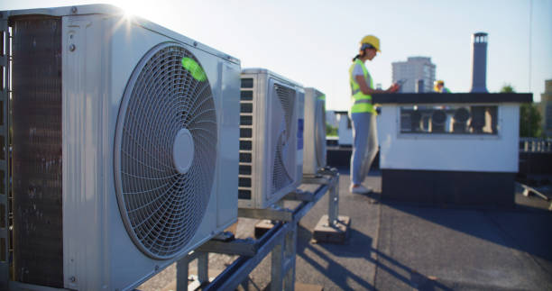
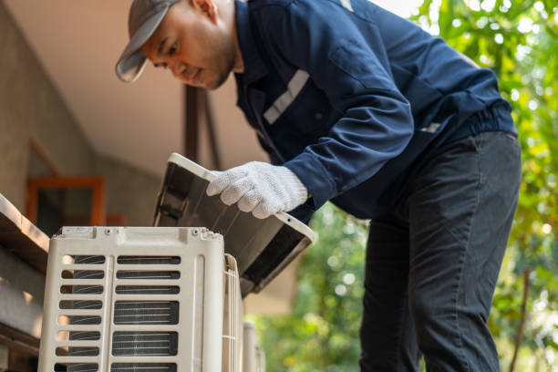
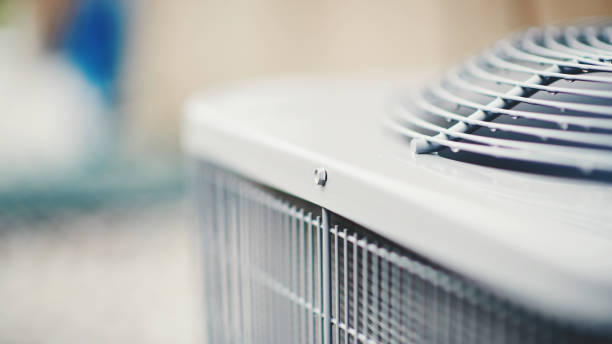
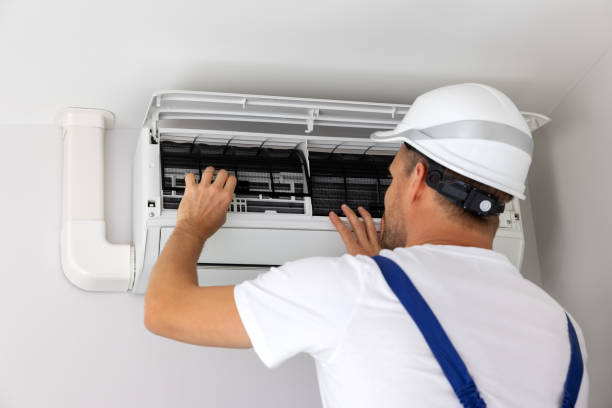
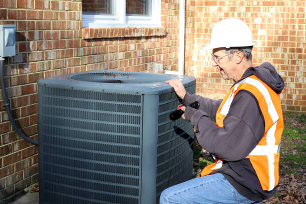
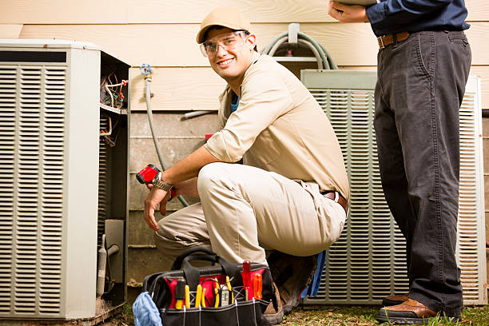
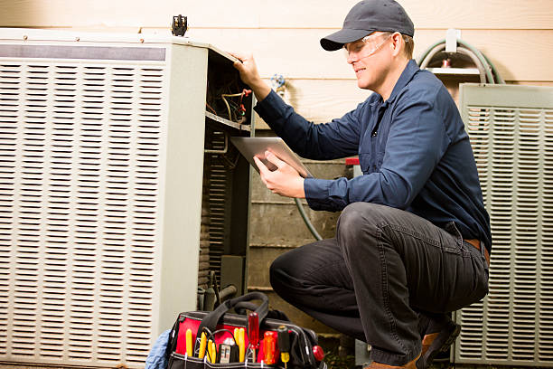
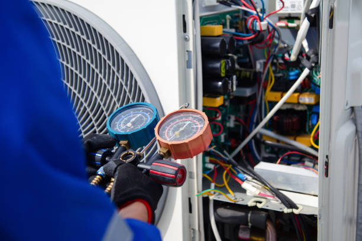

USA - Nationwide
info@hullacrepair.xyz
USA - Nationwide
info@hullacrepair.xyz

Stay cool year-round with our professional air conditioner repair services. We specialize in diagnosing and fixing any AC issues promptly. Trust us to restore comfort to your home .
Don’t let a broken air conditioner disrupt your comfort! Our professional air conditioner repair services in Usa - Nationwide ensure you stay cool all summer long.
Residential & commercial Ac repair
Quality services at affordable prices
Immediate 24/ 7 emergency services


When your air conditioning system unexpectedly breaks down, it can bring everyday life to a halt. The sweltering heat, coupled with uncomfortable humidity levels, can make your home unlivable. If you are in the Usa - Nationwide area and need quick and professional assistance, look no further. Our team of experts is here to provide top-notch AC repair services just a call away. We understand that having a functioning AC is essential for your comfort and well-being. That’s why we pride ourselves on being the best at what we do.
When you search for “AC repair near me” you want guaranteed reliability, speed, and professionalism. Our skilled technicians have extensive experience servicing various AC brands and models. They are familiar with the common problems that affect air conditioning systems in our area, allowing them to quickly diagnose issues and provide effective solutions. We use state-of-the-art technology and tools to ensure every repair is completed to the highest standards.
What sets us apart is our commitment to customer satisfaction. We believe that a satisfied customer is the best advertisement. That’s why we go above and beyond to ensure that you are happy with our service. We provide transparent pricing, and you’ll never encounter hidden fees. Each member of our team undergoes rigorous training to keep updated with the latest HVAC technologies and practices. If your AC unit can be repaired, we’ll let you know. If it’s more cost-effective to replace it, we will provide you with a full range of options to suit your needs and budget.
Additionally, we offer convenient scheduling options, including weekend and evening appointments. We respect your time and will do everything to ensure minimal disruption to your day. In the event of urgent repairs, we offer same-day services, ensuring you’re never left waiting in discomfort. For the best AC repair near you in Usa - Nationwide, trust our proven track record of quality service and customer care.

Central air conditioning is essential for many homes and businesses providing consistent comfort throughout the property. However, like any complex system, central air conditioners can develop issues over time. When your system isn’t functioning optimally, it’s essential to seek professional help right away to maintain indoor comfort and efficiency.
Our central air conditioning repair service is designed to tackle a wide range of problems. From failing compressors and malfunctioning thermostats to refrigerant leaks and duct issues, our trained technicians have the expertise needed to get your system back into top condition. We have been serving the Usa - Nationwide community for years, and we know the specific challenges residents face concerning central AC systems.
Why choose our company for your central air conditioning repair? We believe in providing thorough evaluations and targeted solutions. Our technicians don’t just fix the symptoms; they identify the root cause of the problem. This comprehensive approach not only resolves your current issue but also helps prevent future problems, saving you both time and money in the long run.
We pride ourselves on our fair pricing and transparency. Before starting any repairs, we will explain the work that needs to be done, along with all associated costs. Our goal is to ensure you fully understand what you are paying for and receive the highest quality service possible.
Moreover, we utilize advanced diagnostic equipment to quickly identify issues within your central air conditioning system. This technology helps us provide effective repairs tailored to your specific needs, enhancing the longevity and efficiency of your unit.
, when it comes to central air conditioning repair, we are the preferred choice for residents and businesses alike. Our dedication to quality service and customer satisfaction makes us the best in the business.

For homeowners relying on central air conditioning systems, efficient performance is critical. Our central AC repair addresses issues that may arise, from cooling inefficiencies to strange noises. Our technicians are trained to identify breakdowns and perform detailed repairs to restore optimal functionality. We also provide preventative maintenance options to keep your system operating at peak efficiency all year long.

Maintaining your HVAC system is vital for your home’s comfort, especially in varying climates. Our comprehensive HVAC repair services address all heating and cooling issues, ensuring your HVAC system operates at optimal performance. Our experienced technicians can troubleshoot complex problems and develop tailored solutions that meet your specific needs. We use advanced diagnostic tools and techniques to ensure accuracy and reliability in our repairs. We understand that HVAC issues can be costly, so we strive to offer affordable solutions without compromising quality. Choose us as your HVAC repair partner and experience the peace of mind that comes from working with trusted professionals.

At Ac repair, we believe that quality AC repair shouldn't break the bank. Our affordable AC repair services cater to both residential and commercial clients without compromising on quality. We provide transparent pricing with no hidden fees, ensuring that you can enjoy a cool environment without financial stress.
Beyond providing cost-effective solutions, our technicians prioritize achieving durable repairs. We help you maximize the life of your AC system, saving you money in the long run while ensuring maximum comfort. When you choose us, you choose expertise and affordability combined.

For businesses, the comfort of employees and customers alike is paramount, especially during the scorching summer months. A properly functioning air conditioning system is essential for maintaining a productive work environment. When your commercial AC needs repairs, it can lead to discomfort and even loss of business. That’s why our commercial AC repair services are tailored to quickly resolve issues and return your workplace to a comfortable state.
We have extensive experience working with commercial properties in Usa - Nationwide, whether they are small offices or large retail spaces. Our technicians understand that commercial AC systems can vary widely in complexity, and we are well-prepared to handle any problem you may face.
Why should you choose our company for your commercial AC repair needs? We prioritize swift response times and efficient service to minimize disruptions to your operations. Our trained technicians can quickly diagnose issues and implement effective solutions, ensuring your employees and customers remain comfortable throughout the day.
We also understand the importance of reliable communication. When you contact us for commercial AC repair, you will be kept informed about the diagnosis, repair options, and timelines. Our approach is transparent, aiming to build trust and satisfaction with all our clients.
Moreover, we offer flexible scheduling options that accommodate your business hours. We know that downtime can be costly, which is why we work around your schedule to minimize the impact on your operations. Whether it’s an emergency repair or a routine maintenance check, trust us to provide professional service when you need it most.
Additionally, we offer tailored maintenance plans for commercial properties that help ensure your AC system runs efficiently year-round. Regular maintenance can prevent costly breakdowns and extend the life of your unit, safeguarding your investment.
, when you need expert commercial AC repair, choose us for our commitment to top-tier customer service and quality workmanship. Your business deserves the best, and we are here to ensure that your work environment remains comfortable and conducive to productivity.

For businesses looking to maintain a comfortable and inviting environment, our commercial AC repair is essential. We understand that downtime can cost you money, which is why we diagnose problems quickly and provide effective repairs. Our technicians are experienced in addressing the unique needs of commercial HVAC systems, ensuring minimal disruption to your business operations.

Air conditioning problems can occur unexpectedly, often requiring immediate attention. That’s why we offer 24-hour AC repair services in Usa - Nationwide. Our dedicated team is available around the clock, ready to respond to your urgent AC repair needs, no matter the time of day or night. We believe that everyone deserves comfort in their home or business, which is why our technicians are always prepared for emergency calls. Trust us to deliver swift and effective repairs any time you need us, ensuring that your air conditioning system is back up and running without delay.

In today’s fast-paced world, waiting for essential home repairs is not an option. Our same-day AC repair services in Usa - Nationwide are designed for homeowners and businesses that require immediate assistance. We prioritize quick response times, so you don’t have to endure the discomfort caused by a malfunctioning air conditioning system. Our team is dedicated to diagnosing the problem and providing a solution on the same day you call. We value your time and your comfort, making it our mission to restore your cooling system efficiently. Experience the comfort of fast, reliable service with us.

Regular maintenance is essential for keeping your air conditioning system running smoothly and efficiently. Our AC tune-up services in Usa - Nationwide are designed to enhance your system's performance, reduce energy costs, and extend the life of your unit. During an AC tune-up, our technicians will inspect, clean, and make necessary adjustments to ensure optimal performance. We recommend annual tune-ups to prevent costly repairs down the line and ensure that your air conditioning system operates at peak efficiency. Let us help you save money and enhance your comfort with our specialized maintenance services.

Ductless air conditioning systems have gained popularity due to their energy efficiency and flexibility in cooling individual spaces. However, like any HVAC system, ductless units can experience issues that require professional attention. Our ductless AC repair services in Usa - Nationwide are here to restore your unit’s performance and ensure your environment remains comfortable.
Specializing in ductless air conditioning systems, our trained technicians are equipped to handle various issues, from mechanical failures to refrigerant leaks. We understand the intricacies of ductless systems, having worked extensively with various brands and models. When you call us for ductless AC repair, you can be confident that you will receive effective solutions tailored to your specific needs.
What makes our ductless AC repair services stand out? Our commitment to excellence ensures that each technician is not only skilled but also has extensive training in diagnosing and fixing ductless systems. We utilize advanced diagnostic tools to identify the problem quickly and accurately, minimizing disruption to your comfort.
Additionally, we pride ourselves on offering transparent pricing and clear communication. Our technicians will provide you with a detailed explanation of the issues found, the proposed repairs, and the associated costs before any work begins. You’ll have all the information you need to make informed decisions about your repairs.
Moreover, our focus on customer satisfaction means we strive to complete repairs promptly without sacrificing quality. We understand that when your ductless AC is not functioning, it can lead to discomfort, so we prioritize fast turnaround times while ensuring every repair is done correctly.
Preventive maintenance is another key aspect of our service. We offer tailored maintenance plans for ductless systems to help you avoid costly repairs and keep your system operating efficiently. Regular maintenance can enhance performance, reduce energy costs, and prolong the life of your ductless system.
In Usa - Nationwide, our ductless AC repair services are here to keep your home or business comfortable. Choose us for our quality workmanship, customer-focused approach, and dedication to getting your system back to optimal performance.

Ductless AC systems offer flexibility and efficiency in cooling, but when they malfunction, quick repairs are essential. Our ductless AC repair services specialize in diagnosing and fixing issues unique to ductless systems. Our experienced technicians can swiftly identify problems and provide tailored solutions, ensuring your ductless air conditioner returns to optimal performance quickly and effectively.

Is your air conditioning unit not cooling as it used to? Our AC unit repair services are here to help restore comfort to your living space. We specialize in diagnosing and fixing a multitude of problems that can affect your unit's performance, ranging from simple fixes to more complex repairs. Our team is trained in the latest technologies and repair techniques, ensuring that your AC unit gets the best attention possible. Choose us for your AC repairs, and experience a quick turnaround with quality work that you can trust.

Sometimes repairing an aging or inefficient air conditioner just doesn’t make sense. Our air conditioning replacement services provide a seamless transition to a new, energy-efficient system that meets your cooling needs. We assess your home or business's specific requirements, recommend the best options, and handle the entire installation process for you. Our experienced technicians ensure that your new cooling system is properly installed, giving you peace of mind and optimal performance. Make the upgrade today and enjoy the benefits of improved efficiency and comfort with our reliable air conditioning replacement services.

Heat pumps are versatile HVAC systems that provide both heating and cooling for your home or business. When your heat pump begins to malfunction, it can lead to discomfort and higher energy costs. Our heat pump repair services in Usa - Nationwide are here to ensure your system operates efficiently, keeping your indoor environment comfortable year-round.
With extensive experience repairing various heat pump models, our skilled technicians are equipped to handle any issue you may encounter. From refrigerant leaks and compressor failures to issues related to airflow and temperature discrepancies, our team will diagnose the problem and provide effective repairs.
Why choose our heat pump repair services? Our commitment to quality workmanship ensures that you receive the highest standard of service. We believe that every repair should focus on both immediate resolution and long-term functionality. Our technicians utilize advanced diagnostic tools and techniques to identify issues accurately and make effective repairs that last.
Additionally, we take pride in our transparent pricing. Before performing any repairs, we provide a comprehensive assessment of the problem and outline the associated costs. You’ll never experience surprise charges or hidden fees when you choose our services.
Also, serving clients in Usa - Nationwide means understanding the specific needs related to heat pumps in our climate. We tailor our approach to suit the environmental demands faced by your system, ensuring that you receive a comprehensive, accurate repair.
Our dedication to customer satisfaction goes beyond repairs; we offer ongoing maintenance plans for your heat pump to enhance efficiency and extend its lifespan. Regular maintenance can identify potential issues before they escalate into costly repairs, allowing you to maximize your investment in your heat pump system.
For reliable heat pump repair services trust our experienced team to deliver quality, efficiency, and outstanding customer care. Your comfort is our priority, and we are here to ensure your heat pump operates flawlessly for years to come.

Heat pumps play a vital role in maintaining indoor comfort throughout the year. Our heat pump repair services in Usa - Nationwide focus on resolving issues efficiently to restore both heating and cooling capabilities. Our technicians are trained to handle the complexities of heat pump systems, providing fast and effective solutions.
With our commitment to quality and customer satisfaction, you can trust Ac repair to deliver top-notch repair services. We recognize the importance of a well-functioning heat pump, which is why we prioritize your needs above all.

Mini-split air conditioning systems offer flexibility and efficiency, perfect for homes without traditional ductwork. Our mini-split AC repair services are designed to address the specific challenges these systems may face. Whether you’re experiencing temperature inconsistencies, airflow issues, or unusual noises, our trained technicians will diagnose and fix the problem tailored to your unit's unique needs. We pride ourselves on delivering swift service and effective solutions, making us the top choice for mini-split AC repairs in your area.

Window air conditioning units are practical solutions for residential cooling. However, when they break down, it can lead to discomfort. Our window AC repair services are designed to ensure your unit is repaired efficiently so you can enjoy the cool air without hassle.
At Ac repair, we recognize the importance of quick and effective window AC repairs, offering same-day service to minimize your discomfort. Our technicians are equipped with the tools and expertise needed for effective repairs, ensuring quality service that doesn’t leave you waiting in the heat.

The compressor is the heart of your air conditioning system, integral to its ability to cool your home. Our AC compressor repair services specialize in diagnosing and fixing compressor-related issues. Whether it's electrical failures or refrigerant problems, our certified technicians can address even the most complex compressor issues efficiently. By choosing us for your repairs, you're ensuring your air conditioning system receives the best care possible, keeping your home comfortable and reducing the risk of future breakdowns.

Proper installation is crucial for the efficiency and longevity of your air conditioning system. Our air conditioning installation services cater to homeowners and businesses seeking reliable, high-quality cooling solutions. We offer a wide range of energy-efficient systems tailored to your specific needs and preferences, ensuring a perfect fit for your space. Our experienced team handles every aspect of the installation process professionally, from system selection to implementation. Trust us to deliver a seamless and effective installation experience, enhancing your comfort for years to come.

HVAC emergencies can be disruptive and stressful. Whether you face a total system failure in the dead of winter or an AC breakdown during a heatwave, you need a reliable partner to turn to for emergency repairs. Our HVAC emergency repair services are designed to address urgent needs quickly and efficiently, ensuring your comfort is restored as soon as possible.
Our team of trained technicians is available 24/7 to respond to your HVAC emergencies. We understand that issues can arise at any time, and our commitment to prompt service means you won’t have to wait for relief. When you call us for an emergency repair, our dedicated professionals will arrive at your location as quickly as possible.
Why should you trust our HVAC emergency repair services? We take great pride in our extensive training and experience. Our technicians are skilled in diagnosing and repairing a wide variety of HVAC problems, ensuring that they can address any situation effectively. They are equipped with the tools and technology required to tackle even the most complex issues on the spot.
Furthermore, we offer transparent pricing even for emergency services. Upon arrival, our technicians will assess the problem and provide you with a clear explanation of the required repairs along with an estimate of the costs involved. You'll never be caught off guard by unexpected charges.
In addition to emergency repairs, we believe in building lasting relationships with our clients. Our technicians are friendly and approachable, ready to address any of your concerns or questions regarding the repairs or your HVAC system's performance.
Moreover, our commitment to quality ensures that we use the best materials and replacement parts during emergency repairs, aiming for effective long-term solutions rather than just temporary fixes.
If you're facing an HVAC emergency in Usa - Nationwide, trust our dedicated team to provide immediate, reliable support that restores your comfort. Your peace of mind is our top priority, and we are here to help when you need us most.

HVAC emergencies can happen at any moment, and quick resolutions are critical to your comfort. Our HVAC emergency repair services are designed to address urgent issues effectively, providing 24/7 availability for clients in need.
Our well-trained technicians are ready to tackle your emergency repairs swiftly. We realize that your comfort cannot wait, which is why we prioritize efficient service without compromising the quality of our repairs. Trust Ac repair with all your HVAC emergencies.

Clean air ducts improve air quality and system efficiency in your home. Our air duct cleaning services effectively remove contaminants, dust, and allergens, ensuring that you breathe clean air while prolonging your HVAC system's lifespan.
When you choose Ac repair, we commit to thorough inspections and utilize state-of-the-art cleaning equipment to ensure your ductwork is free from debris and pollutants. Our goal is to help you maintain a healthier indoor environment and maximize the efficiency of your HVAC system.

When searching for the best AC repair company, look no further than us! We are committed to providing top-tier air conditioning solutions with a focus on customer satisfaction and quality service. Our years of experience, combined with our skilled technicians and reliable service, make us the best choice . We understand your needs and strive to exceed your expectations with every interaction.
USA - Nationwide Ac repair Pros
(877) 848-1711
info@hullacrepair.xyz
09.00 AM - 09.00 PM
09.00 AM - 12.00 PM